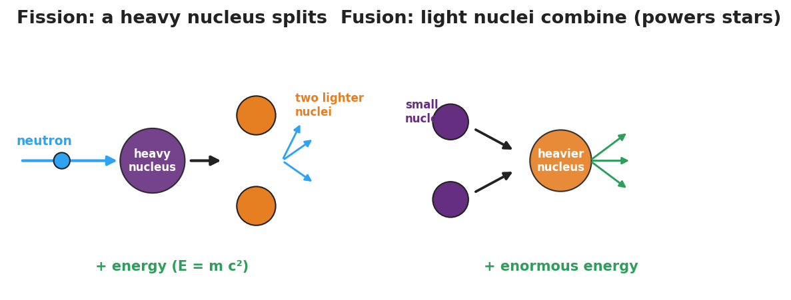

Unit: Modern Physics — Lesson 05: Fusion, Fission, and Radioactive Decay
Phenomenon
A campfire burns out overnight. The Sun has blazed for about five billion years — and is barely halfway done. No chemical fire could last that long. The same word, nuclear, shows up in the Sun, in power plants, and in carbon-14 dating of ancient bones.

Driving Question
Where does nuclear energy come from, why is it so enormous, and how does the nucleus change in each case?
Notice & Wonder
One word — nuclear — covers the Sun, power plants, and carbon dating. Write two things you notice and two things you wonder.
Initial Model
Draw a nucleus (protons + neutrons). Show one way you think it could change to release energy.
Investigate
Toggle between Fission, Fusion, and Radioactive Decay (α, β, γ). Press Run to animate how the nucleus changes — splitting, combining, or emitting a particle — and read what comes out and where you see it in the real world.
Fission: a heavy nucleus splits into lighter ones — how nuclear power plants work.
Make It Make Sense
- A heavy uranium nucleus is hit by a neutron and breaks into two lighter nuclei. Is this fission, fusion, or decay? How do you know?
- The Sun combines hydrogen nuclei into helium. Which process is this, and what does it have to do with how stars and elements form?
- Why is the energy released by a nuclear change so much larger than the energy from burning fuel? (Use E = mc² as a scale idea — no calculation.)
Stuck? Sentence frame
"In ___, a heavy nucleus splits; in ___, light nuclei combine; in ___, a nucleus emits radiation."
Key Vocabulary (max 3)
- fission — the splitting of a heavy nucleus into lighter nuclei, releasing energy (used in nuclear power plants)
- fusion — the combining of light nuclei into a heavier nucleus, releasing enormous energy (powers the Sun and forms elements in stars)
- radioactive decay — the spontaneous emission of radiation (alpha, beta, or gamma) from an unstable nucleus
Revise Your Model
Return to your Initial Model. Redraw it as one of the three changes — fission, fusion, or decay — and label where the enormous energy comes from (mass → energy, E = mc², scale only).
Return to the Phenomenon
In one sentence, explain what powers the Sun, using fusion. (Target: "The Sun is powered by fusion — light hydrogen nuclei combine into heavier nuclei, releasing enormous energy and forming new elements.")
Exit Ticket + Closing Reflection
- (a) A heavy uranium nucleus is struck by a neutron and splits into two lighter nuclei — is this fission, fusion, or decay? (b) The Sun combines hydrogen nuclei into helium — which process is this, and what does it have to do with star formation? (c) Why is the energy from a nuclear change so much larger than from burning fuel? (Use E = mc² as a scale idea — no calculation.)
- Reflection: What's one place in your life that nuclear physics quietly shows up?